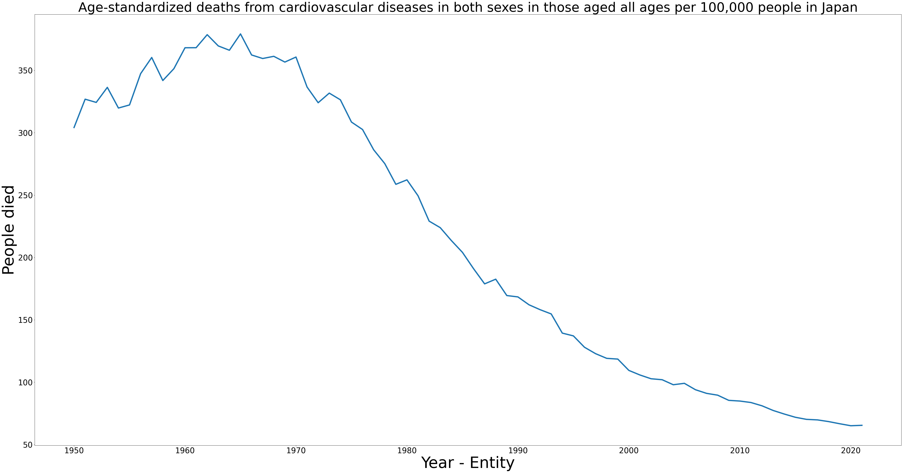
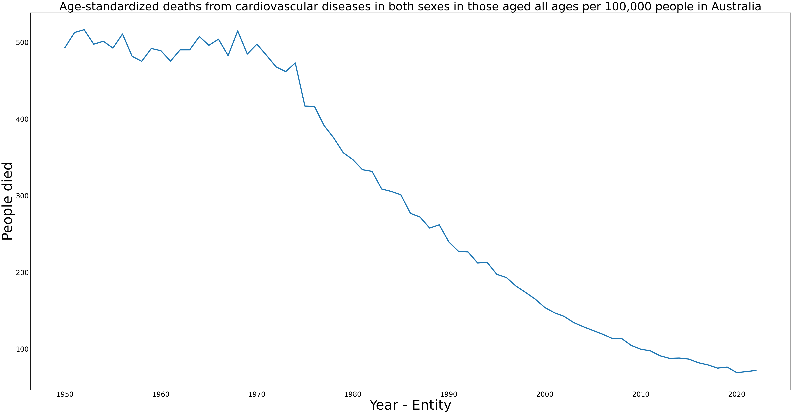
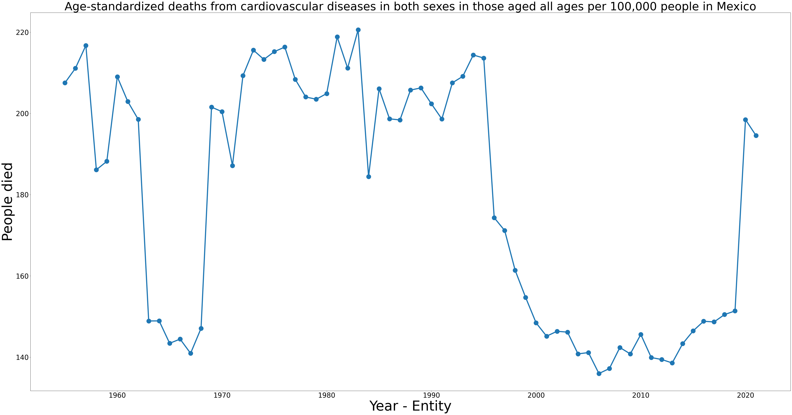

Analysis of Age-Standardized Death Rates from Cardiovascular Diseases in Japan (1950–2025)

The line chart shows a decline in age-standardized death rates from cardiovascular diseases in Japan, from 300 per 100,000 in 1950 to below 50 by 2025. Rates peaked at 350 in the early 1970s, likely due to limited heart disease awareness. A steady drop began in the late 1970s, reaching 250 by 1980, driven by improved access to preventive healthcare. By the early 2000s, rates fell to 200, aided by reduction in smoking and healthy diet adoption. Minor fluctuations occurred, but progress in reducing deaths due to cardiovascular diseases highlights the need for ongoing public health efforts.
Analysis of Age-Standardized Death Rates from Cardiovascular Diseases in Australia(1977–2019)

The bar chart shows age-standardized death rates from cardiovascular diseases per 100,000 people from 1977 to 2019. In 1977, the rate peaked at around 700, but it sharply declined to 500 by 1980, likely due to improved heart disease awareness and access to preventive healthcare. Throughout the 1980s and 1990s, rates fluctuated between 400 and 500, but a steady decline began in the late 1990s, falling below 300 by 2019. This trend reflects advancements in medical treatments, reduction in smoking, and healthy diet adoption. However, minor increases in some years suggest ongoing challenges. The chart highlights significant progress in cardiovascular health but emphasizes the need for continued public health initiatives.
Analysis of Age-Standardized Death Rates from Cardiovascular Diseases in Mexico (1960–2020)

The line chart shows fluctuating age-standardized death rates from cardiovascular diseases in Mexico, starting at around 200 per 100,000 in 1960. Rates peaked at 220 in the 1980s and early 1990s, possibly due to limited heart disease awareness. A significant decline began in the late 1990s, dropping to 160 by 2000, driven by improved access to preventive healthcare and reduction in smoking. However, rates rose again after 2010, reaching 200 by 2020, indicating challenges like insufficient healthy diet adoption. The chart underscores ongoing issues in managing deaths due to cardiovascular diseases, highlighting the need for sustained public health efforts.